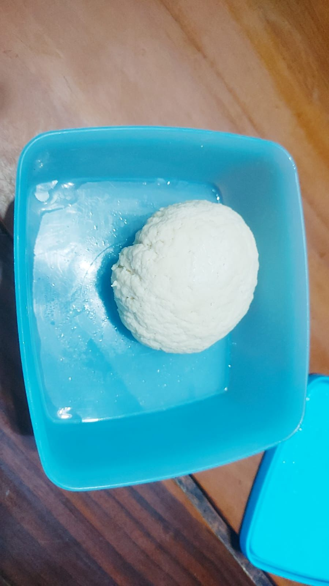

Proses membuat keju beserta durasinya:
 Proses membuat yoghurt beserta durasi pembuatannya: Total waktu pembuatan: 38 menit + 8 jam didiamkan (7 jam proses inkubasi + 1 jam proses pendinginan)
Bagaimana Cara Membuat Keju dan Yoghurt?
Bahan:
Alat:
Total waktu pembuatan keju adalah : 25 menit + 24 jam proses pendinginan
No.
Proses Pembuatan
Durasi Pengerjaan
1
Masukkan susu ke panci, aduk terus hingga mendidih. Tambahkan cuka untuk memisahkan zat padat pada susu. Aduk rata.
15 Menit
2
Setelah gumpalan susu terpisah, siapkan saringan berupa kain bersih untuk menyaring bakal keju. Saring hingga benar-benar terpisah dari airnya.Proses saring dilakukan sambil ditekan secara perlahan-lahan. Campur hasil perasan (gumpalan keju) dengan garam secukupnya (3 sendok teh).
10 Menit
3
Gumpalan keju disimpan di dalam toples dan didiamkan di dalam kulkas dengan suhu 5-10 derajat Celcius.
10 Menit
Keju yang sudah padat dapat langsung disantap maupun diolah menjadi hidangan lain
Bahan:
Bahan:
No.
Proses Pembuatan
Durasi Pengerjaan
1
Tuang 1000 ml susu segar ke dalam panci dan panaskan dengan api kecil sambil diaduk perlahan. Pada saat proses pemanasan pastikan susu jangan sampai mendidih dan hangus pada bagian bawah.
20 Menit
2
Setelah susu sudah cukup panas, angkat susu dan dinginkan sampai suhu 43°C
15 Menit
3
Setelah mencapai suhu 43°C, tuang 2 sdm yogurt plain ke dalam panci yang berisi susu, lalu aduk rata
3 Menit
4
Pindahkan susu yang sudah tercampur dengan yogurt plain ke dalam toples dan tutup rapat. Diamkan yogurt pada suhu 38°C.
7 jam
5
Setelah didiamkan selama 7 jam atau lebih, dinginkan yogurt yang telah mengental ke dalam lemari es beberapa jam sebelum dikonsumsi
1 jam
Tambahan:
Proses inkubasi/pendiaman pada suhu 38 derajat celcius bisa dilakukan lebih lama. Semakin lama didiamkan, maka tingkat keasaman akan semakin tinggi dan tekstur yoghurt menjadi semakin kental.